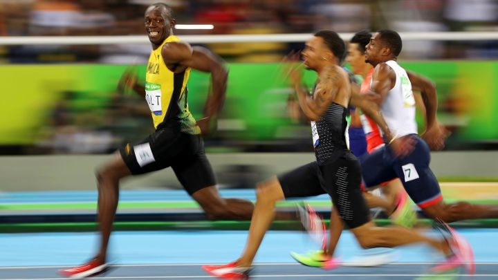

Las virtudes físicas y genéticas de Bolt conformaron un atleta predestinado a la eternidad. Su altura
de 1,95 metros, que era un obstáculo en la fase de aceleración inicial, le concedía la capacidad de
mantener una velocidad alta durante un tiempo mayor y desacelerar a una tasa más lenta que otros
velocistas más bajos. Bolt era único, sí, pero no se descarta que alguien pueda correr más rápido que él
en un futuro. La ciencia siempre ha mostrado un gran interés sobre este asunto y se han sucedido
diferentes estudios que predicen nuevas cimas para el hombre. Mark Denny, de la Universidad de Stanford
(California), se propuso demostrar mediante un complejo modelo matemático que existía un límite de
velocidad que el hombre era incapaz de superar. Lo hizo tras las exhibiciones de Bolt en los Juegos de
Pekín 2008. Denny concluyó que el ser humano sería capaz de llegar a los 9,48 segundos en la distancia
de 100 metros lisos. Sin embargo, después del estallido de Bolt aparecieron estudios más recientes que
dan mayor luz y rebajan la cifra.

En Pekín mi vida cambió por completo. Aún recuerdo los detalles de cada una de mis grandes carreras.
Siempre tendré a Pekín en mi corazón, es donde empezó todo. Esos Juegos Olímpicos de 2008 me cambiaron
la vida en menos de 30 segundos.
No te pierdas el video del rocord!!!
El equipo femenino jamaiquino de atletismo vuelve a hacer historia
Por otra parte, Thompson-Herah hizo historia al convertirse en la primera atleta desde la
norteamericana Florence Griffith-Joyner en conquistar el triplete de 100, 200, 4x100 metros en los
Juegos Olímpicos. Asimismo, Jamaica, que volvió a ganar esta prueba luego de Atenas 2004, batió un nuevo
récord nacional.
Por otra parte, Thompson-Herah hizo historia al convertirse en la primera atleta desde la
norteamericana Florence Griffith-Joyner en conquistar el triplete de 100, 200, 4x100 metros en los
Juegos Olímpicos. Asimismo, Jamaica, que volvió a ganar esta prueba luego de Atenas 2004, batió un nuevo
récord nacional.
Mira el video de la posta mas rapida de mujeres!!!
El salto de los 30 años
Con su salto de 8,69 metros en la final del Campeonato del Mundo de Doha 2019, el jamaicano Tajay Gayle
se colocó décimo de una lista encabezada por el estadounidense Mike Powell gracias a los 8,95 metros que
logró en el Mundial de Tokio, el 30 de agosto de 1991.
Aquel salto, en los terceros Mundiales de Atletismo, no valió una mera plusmarca más. Significaba el
fin de uno de los récords más longevos y simbólicos del deporte. Los 8,90 metros que Bob Beamon había
saltado en los Juegos de México 68 pasaban a la historia 22 años, 10 meses y 22 días después. Además
Powell tenía enfrente al gran icono del atletismo, Carl Lewis, que llevaba una década sin ser batido en
el salto de longitud. Había acumulado 65 victorias consecutivas. Y por si fuera poco, para ganar, tuvo
que superar un salto que también fue de récord (aunque no homologable) para el 'hijo del viento' en la
final de más calidad de todos los tiempos.
Mira el video del record mundial de salto de longitud
Verstappen fue amo y señor en su casa y la gran incógnita pasa por saber cuánto
antes será campeón otra vez
Siete carreras faltan para que baje el telón de la temporada 2022 de la Fórmula 1 y parece que no habrá
nadie capaz de detener la marcha de Max Verstappen y evitar que el neerlandés conquiste su segundo
título en la categoría reina. El piloto de Red Bull se impuso este domingo en un accidentado Gran Premio
de Países Bajos, ante una multitud de sus compatriotas que vistieron de anaranjado el circuito de
Zandvoort, y consiguió su décima victoria del año y la cuarta consecutiva, para afianzarse en lo más
alto de la tabla de posiciones y ampliar a 109 la ventaja sobre sus perseguidores.
Verstappen cruzó la meta en primer lugar, unos cuatro segundos antes que George Russell (Mercedes) y
más de diez antes que Charles Leclerc (Ferrari), que completó el podio. El monegasco -que tras las
primeras citas del año se había perfilado como la mayor amenaza para el neerlandés- rescató una tercera
posición con gusto a poco, que lo dejó muy complicado para pelear por el trofeo.
Max Verstappen adelantando a Lewis Hamilton Dutch GP 2022
Argentina sumó un triunfo importante y avanzó a los cuartos de final en la
AmeriCup de básquetbol
Tras la aplastante victoria por 95-62 ante Islas Vírgenes en el debut, en el que fue además el primer
partido de Pablo Prigioni como entrenador, el seleccionado masculino de básquetbol consiguió este
domingo otro triunfo en la AmeriCup. Fue un cómodo 99-86 sobre Puerto Rico, un rival siempre
complicado.
Con este resultado positivo ante los boricuas -que venían de vencer por 88 a 82 ante República
Dominicana-, Argentina se aseguró el pase a los cuartos de final del torneo, a los que clasifican los
dos primeros de cada zona -hay tres, de cuatro países cada una- y los dos mejores terceros
Gabriel Deck con 27 puntos y 9 rebotes fue uno de los jugadores más destacados del equipo nacional.
Lo secundaron Nicolás Laprovíttola con 20 tantos, 5 rebotes y 4 asistencias, mientras que Facundo
Campazzo fue el titiritero con 17 puntos, 15 pases gol y 6 robos.
Argentina - Puerto Rico | Game Highlights
Djokovic tampoco jugará la Copa Davis con Serbia
LLa temporada de Novak Djokovic viene complicada. Perdió el número 1 del ranking mundial (ahora está
sexto) principalmente por no haber podido defender la mayoría de los puntos en los torneos importantes
por su postura antivacunas, entre ellos el actual US Open en los Estados Unidos. Este lunes, además,
se confirmó que tampoco estará con Serbia en la fase de grupos de la Copa Davis que se disputará en
España desde el 13 de septiembre
Así lo anunció el capitán del equipo, Viktor Troicki, quien detalló que se trata de "razones
personales". "Un sinnúmero de veces ha estado con la selección, pero esta vez no está en condición de
hacerlo", declaró al diario deportivo serbio Sportski zurnal, sin dar más detalles sobre la ausencia
del tenista.